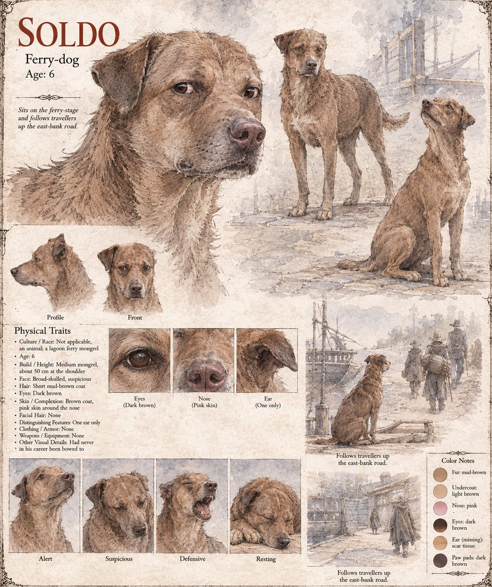

Soldo
Ferry-dog of Sant’Elmo · one-eared mongrel · 6 on the sheet
He is a one-eared mongrel called Soldo, who had been bought to keep down the rats in the ferry-shed and had been promoted, by a series of unauthorized advancements, to the post of ferry-dog, in which capacity he meets every passenger at the landing-stage and inspects his ankles. Bortolo owns him. On the fourteenth of Jorren the tall grey foreigner stepping off the oil-barge turns and bows to him, and Soldo, who has never in his career been bowed to, sits down in the middle of the stage with his one ear cocked; after the time it takes an animal to run through every possible response and discard them all, he gets up, walks forward and puts his nose against the stranger’s boot. It was a decision. The next morning, though he has never in his life left the ferry, he follows the man as far as the first bend and sits down in the road to watch him out of sight. Afterward he goes up the east-bank road uninvited, to the ford with Agata in Ferren and at her heel again as she walks the whole curve of the Ring before the last lamp is lit, and he takes up a position at Domenica’s heel, with an air of having been appointed; she does not like the dog.
The manuscript gives his ear, his breed, his job and his decisions, and no age, size or colour. The sheet’s age of 6, height of about 50 cm at the shoulder, short mud-brown coat, dark brown eyes, pink nose and broad suspicious skull are its own, as are its panels Alert, Suspicious, Defensive and Resting. Its caption Follows travellers up the east-bank road., used for both its scenes, condenses the manuscript, which has him meet passengers at the landing and follow a few of them up that road. Its line that he had never in his career been bowed to is the manuscript’s.
“a one-eared mongrel called Soldo, who had been bought to keep down the rats in the ferry-shed and had been promoted, by a series of unauthorized advancements, to the post of ferry-dog”